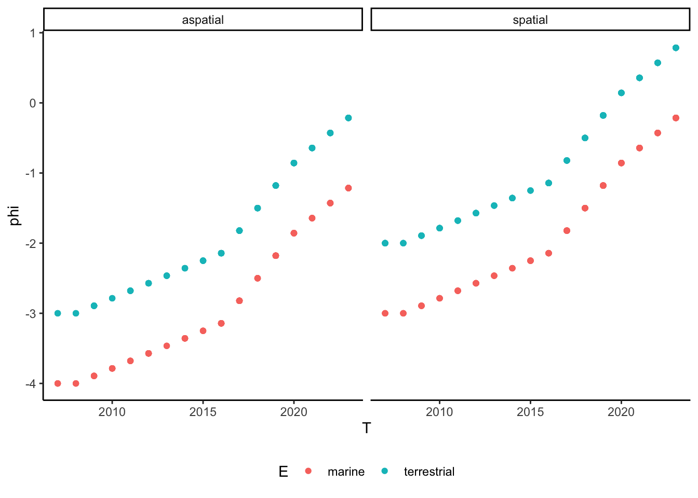
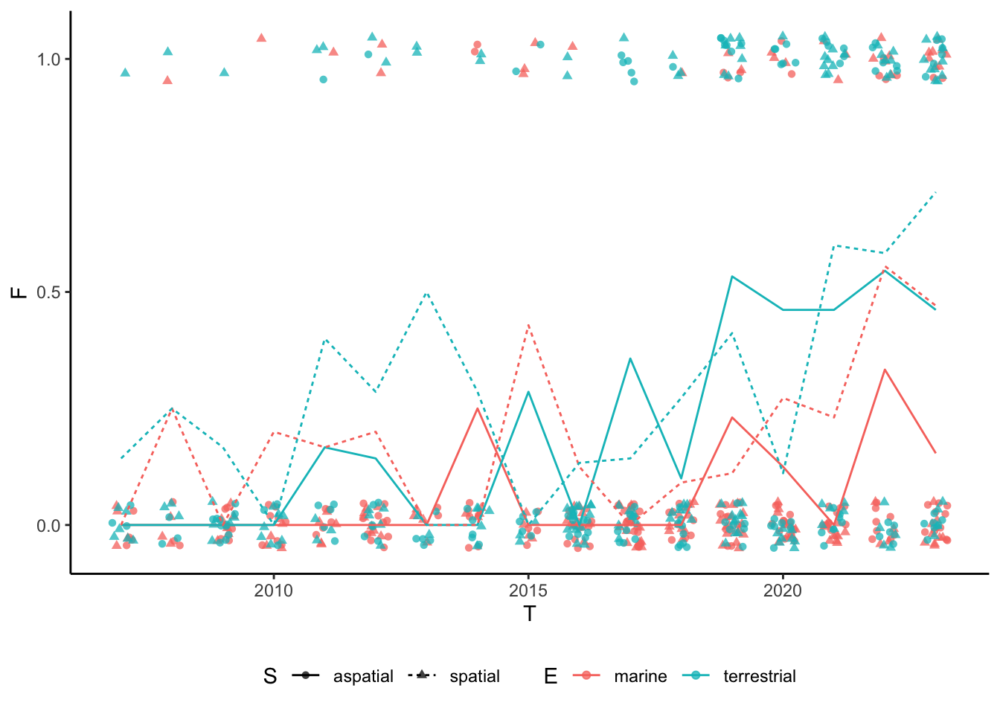
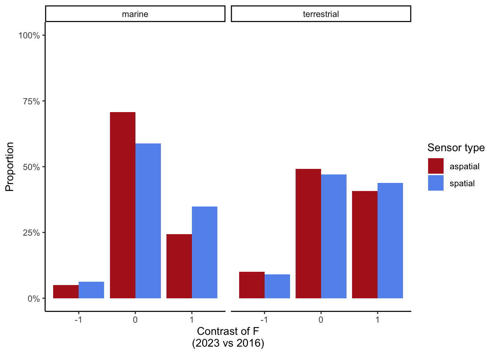
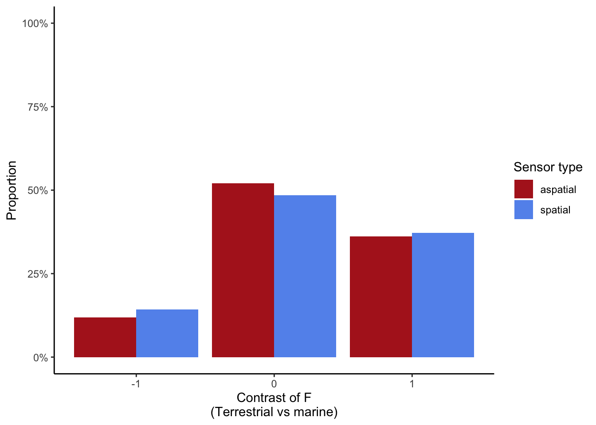
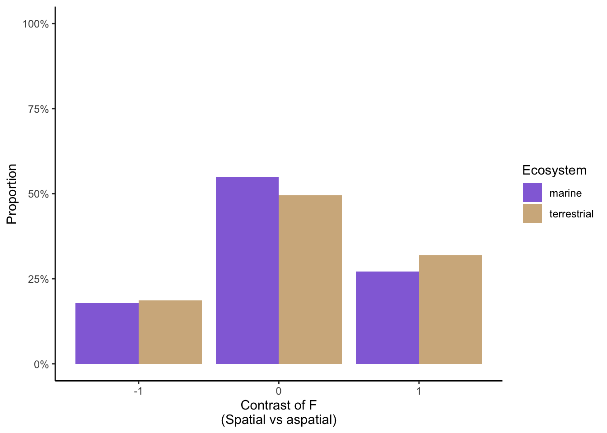

library(brms)Loading required package: RcppLoading 'brms' package (version 2.20.4). Useful instructions
can be found by typing help('brms'). A more detailed introduction
to the package is available through vignette('brms_overview').
Attaching package: 'brms'The following object is masked from 'package:stats':
arlibrary(tidyverse)── Attaching core tidyverse packages ──────────────────────── tidyverse 2.0.0 ──
✔ dplyr 1.1.4 ✔ readr 2.1.5
✔ forcats 1.0.0 ✔ stringr 1.5.1
✔ ggplot2 3.4.4 ✔ tibble 3.2.1
✔ lubridate 1.9.3 ✔ tidyr 1.3.1
✔ purrr 1.0.2 ── Conflicts ────────────────────────────────────────── tidyverse_conflicts() ──
✖ dplyr::filter() masks stats::filter()
✖ dplyr::lag() masks stats::lag()
ℹ Use the conflicted package (<http://conflicted.r-lib.org/>) to force all conflicts to become errorsset.seed(1234)
# Grid of independent variables
biolog_grid <- expand_grid(
era = c("early", "middle", "recent"),
E = c("marine", "terrestrial"),
S = c("aspatial", "spatial")
) %>%
slice(rep(1:12, each = 50)) %>%
mutate(T = case_when(
era == "early" ~ sample(2007:2015, 600, replace = TRUE),
era == "middle" ~ sample(2016:2019, 600, replace = TRUE),
era == "recent" ~ sample(2020:2023, 600, replace = TRUE)
))
# Parameters for simulation
# delta
delta <- c(
# Dummy for 2007
0,
# slow increases in early period
rep(1, 8),
# fastest increases in middle period
rep(3, 4),
# moderate increases in recent period
rep(2, 4)
)
delta <- delta / sum(delta)
# betas (E, S, T)
beta_E <- c(marine = 0, terrestrial = 1)
beta_S <- c(aspatial = 0, spatial = 1)
beta_T <- 3
alpha <- -4
# Run simulation
inv_logit <- \(x) exp(x) / (1 + exp(x))
biolog <- biolog_grid %>%
mutate(cumsum_delta = map_dbl(T, \(t) sum(delta[1:(t - 2007)])),
phi = alpha + beta_E[E] + beta_S[S] + beta_T * cumsum_delta,
F = rbinom(600, size = 1, prob = inv_logit(phi)))
# Visualize data
biolog_summ <- biolog %>%
group_by(T, E, S) %>%
summarize(F = mean(F),
.groups = "drop")
# phi ~ T
ggplot(biolog, aes(T, phi, color = E)) +
geom_point() +
facet_wrap(~S) +
theme_classic() +
theme(legend.position = "bottom")
# F ~ T
ggplot(biolog, aes(T, F, color = E)) +
geom_jitter(aes(shape = S), alpha = 0.75, width = 0.25, height = 0.05) +
geom_line(aes(linetype = S), biolog_summ) +
scale_y_continuous(breaks = c(0, 0.5, 1)) +
theme_classic() +
theme(legend.position = "bottom")
# Fit model
biolog_prior <- c(
set_prior(prior = "normal(0, 1)", class = "Intercept"),
set_prior(prior = "normal(0, 1)", coef = "Eterrestrial"),
set_prior(prior = "normal(0, 1)", coef = "Sspatial"),
set_prior(prior = "normal(0, 1)", coef = "moT"),
set_prior(prior = "dirichlet(1)", class = "simo", coef = "moT1")
)
biolog_mod <- brm(F ~ E + S + mo(T),
data = biolog,
family = bernoulli(link = "logit"),
prior = biolog_prior)Compiling Stan program...
Trying to compile a simple C fileRunning /Library/Frameworks/R.framework/Resources/bin/R CMD SHLIB foo.c
using C compiler: ‘Apple clang version 12.0.0 (clang-1200.0.32.27)’
using SDK: ‘MacOSX11.0.sdk’
clang -arch arm64 -I"/Library/Frameworks/R.framework/Resources/include" -DNDEBUG -I"/Library/Frameworks/R.framework/Versions/4.3-arm64/Resources/library/Rcpp/include/" -I"/Library/Frameworks/R.framework/Versions/4.3-arm64/Resources/library/RcppEigen/include/" -I"/Library/Frameworks/R.framework/Versions/4.3-arm64/Resources/library/RcppEigen/include/unsupported" -I"/Library/Frameworks/R.framework/Versions/4.3-arm64/Resources/library/BH/include" -I"/Library/Frameworks/R.framework/Versions/4.3-arm64/Resources/library/StanHeaders/include/src/" -I"/Library/Frameworks/R.framework/Versions/4.3-arm64/Resources/library/StanHeaders/include/" -I"/Library/Frameworks/R.framework/Versions/4.3-arm64/Resources/library/RcppParallel/include/" -I"/Library/Frameworks/R.framework/Versions/4.3-arm64/Resources/library/rstan/include" -DEIGEN_NO_DEBUG -DBOOST_DISABLE_ASSERTS -DBOOST_PENDING_INTEGER_LOG2_HPP -DSTAN_THREADS -DUSE_STANC3 -DSTRICT_R_HEADERS -DBOOST_PHOENIX_NO_VARIADIC_EXPRESSION -D_HAS_AUTO_PTR_ETC=0 -include '/Library/Frameworks/R.framework/Versions/4.3-arm64/Resources/library/StanHeaders/include/stan/math/prim/fun/Eigen.hpp' -D_REENTRANT -DRCPP_PARALLEL_USE_TBB=1 -I/opt/R/arm64/include -fPIC -falign-functions=64 -Wall -g -O2 -c foo.c -o foo.o
In file included from <built-in>:1:
In file included from /Library/Frameworks/R.framework/Versions/4.3-arm64/Resources/library/StanHeaders/include/stan/math/prim/fun/Eigen.hpp:22:
In file included from /Library/Frameworks/R.framework/Versions/4.3-arm64/Resources/library/RcppEigen/include/Eigen/Dense:1:
In file included from /Library/Frameworks/R.framework/Versions/4.3-arm64/Resources/library/RcppEigen/include/Eigen/Core:88:
/Library/Frameworks/R.framework/Versions/4.3-arm64/Resources/library/RcppEigen/include/Eigen/src/Core/util/Macros.h:628:1: error: unknown type name 'namespace'
namespace Eigen {
^
/Library/Frameworks/R.framework/Versions/4.3-arm64/Resources/library/RcppEigen/include/Eigen/src/Core/util/Macros.h:628:16: error: expected ';' after top level declarator
namespace Eigen {
^
;
In file included from <built-in>:1:
In file included from /Library/Frameworks/R.framework/Versions/4.3-arm64/Resources/library/StanHeaders/include/stan/math/prim/fun/Eigen.hpp:22:
In file included from /Library/Frameworks/R.framework/Versions/4.3-arm64/Resources/library/RcppEigen/include/Eigen/Dense:1:
/Library/Frameworks/R.framework/Versions/4.3-arm64/Resources/library/RcppEigen/include/Eigen/Core:96:10: fatal error: 'complex' file not found
#include <complex>
^~~~~~~~~
3 errors generated.
make: *** [foo.o] Error 1Start sampling
SAMPLING FOR MODEL 'anon_model' NOW (CHAIN 1).
Chain 1:
Chain 1: Gradient evaluation took 8e-05 seconds
Chain 1: 1000 transitions using 10 leapfrog steps per transition would take 0.8 seconds.
Chain 1: Adjust your expectations accordingly!
Chain 1:
Chain 1:
Chain 1: Iteration: 1 / 2000 [ 0%] (Warmup)
Chain 1: Iteration: 200 / 2000 [ 10%] (Warmup)
Chain 1: Iteration: 400 / 2000 [ 20%] (Warmup)
Chain 1: Iteration: 600 / 2000 [ 30%] (Warmup)
Chain 1: Iteration: 800 / 2000 [ 40%] (Warmup)
Chain 1: Iteration: 1000 / 2000 [ 50%] (Warmup)
Chain 1: Iteration: 1001 / 2000 [ 50%] (Sampling)
Chain 1: Iteration: 1200 / 2000 [ 60%] (Sampling)
Chain 1: Iteration: 1400 / 2000 [ 70%] (Sampling)
Chain 1: Iteration: 1600 / 2000 [ 80%] (Sampling)
Chain 1: Iteration: 1800 / 2000 [ 90%] (Sampling)
Chain 1: Iteration: 2000 / 2000 [100%] (Sampling)
Chain 1:
Chain 1: Elapsed Time: 2.559 seconds (Warm-up)
Chain 1: 0.846 seconds (Sampling)
Chain 1: 3.405 seconds (Total)
Chain 1:
SAMPLING FOR MODEL 'anon_model' NOW (CHAIN 2).
Chain 2:
Chain 2: Gradient evaluation took 4.6e-05 seconds
Chain 2: 1000 transitions using 10 leapfrog steps per transition would take 0.46 seconds.
Chain 2: Adjust your expectations accordingly!
Chain 2:
Chain 2:
Chain 2: Iteration: 1 / 2000 [ 0%] (Warmup)
Chain 2: Iteration: 200 / 2000 [ 10%] (Warmup)
Chain 2: Iteration: 400 / 2000 [ 20%] (Warmup)
Chain 2: Iteration: 600 / 2000 [ 30%] (Warmup)
Chain 2: Iteration: 800 / 2000 [ 40%] (Warmup)
Chain 2: Iteration: 1000 / 2000 [ 50%] (Warmup)
Chain 2: Iteration: 1001 / 2000 [ 50%] (Sampling)
Chain 2: Iteration: 1200 / 2000 [ 60%] (Sampling)
Chain 2: Iteration: 1400 / 2000 [ 70%] (Sampling)
Chain 2: Iteration: 1600 / 2000 [ 80%] (Sampling)
Chain 2: Iteration: 1800 / 2000 [ 90%] (Sampling)
Chain 2: Iteration: 2000 / 2000 [100%] (Sampling)
Chain 2:
Chain 2: Elapsed Time: 2.535 seconds (Warm-up)
Chain 2: 1.016 seconds (Sampling)
Chain 2: 3.551 seconds (Total)
Chain 2:
SAMPLING FOR MODEL 'anon_model' NOW (CHAIN 3).
Chain 3:
Chain 3: Gradient evaluation took 4.4e-05 seconds
Chain 3: 1000 transitions using 10 leapfrog steps per transition would take 0.44 seconds.
Chain 3: Adjust your expectations accordingly!
Chain 3:
Chain 3:
Chain 3: Iteration: 1 / 2000 [ 0%] (Warmup)
Chain 3: Iteration: 200 / 2000 [ 10%] (Warmup)
Chain 3: Iteration: 400 / 2000 [ 20%] (Warmup)
Chain 3: Iteration: 600 / 2000 [ 30%] (Warmup)
Chain 3: Iteration: 800 / 2000 [ 40%] (Warmup)
Chain 3: Iteration: 1000 / 2000 [ 50%] (Warmup)
Chain 3: Iteration: 1001 / 2000 [ 50%] (Sampling)
Chain 3: Iteration: 1200 / 2000 [ 60%] (Sampling)
Chain 3: Iteration: 1400 / 2000 [ 70%] (Sampling)
Chain 3: Iteration: 1600 / 2000 [ 80%] (Sampling)
Chain 3: Iteration: 1800 / 2000 [ 90%] (Sampling)
Chain 3: Iteration: 2000 / 2000 [100%] (Sampling)
Chain 3:
Chain 3: Elapsed Time: 2.673 seconds (Warm-up)
Chain 3: 0.676 seconds (Sampling)
Chain 3: 3.349 seconds (Total)
Chain 3:
SAMPLING FOR MODEL 'anon_model' NOW (CHAIN 4).
Chain 4:
Chain 4: Gradient evaluation took 4.8e-05 seconds
Chain 4: 1000 transitions using 10 leapfrog steps per transition would take 0.48 seconds.
Chain 4: Adjust your expectations accordingly!
Chain 4:
Chain 4:
Chain 4: Iteration: 1 / 2000 [ 0%] (Warmup)
Chain 4: Iteration: 200 / 2000 [ 10%] (Warmup)
Chain 4: Iteration: 400 / 2000 [ 20%] (Warmup)
Chain 4: Iteration: 600 / 2000 [ 30%] (Warmup)
Chain 4: Iteration: 800 / 2000 [ 40%] (Warmup)
Chain 4: Iteration: 1000 / 2000 [ 50%] (Warmup)
Chain 4: Iteration: 1001 / 2000 [ 50%] (Sampling)
Chain 4: Iteration: 1200 / 2000 [ 60%] (Sampling)
Chain 4: Iteration: 1400 / 2000 [ 70%] (Sampling)
Chain 4: Iteration: 1600 / 2000 [ 80%] (Sampling)
Chain 4: Iteration: 1800 / 2000 [ 90%] (Sampling)
Chain 4: Iteration: 2000 / 2000 [100%] (Sampling)
Chain 4:
Chain 4: Elapsed Time: 2.6 seconds (Warm-up)
Chain 4: 0.663 seconds (Sampling)
Chain 4: 3.263 seconds (Total)
Chain 4: posterior_summary(biolog_mod) %>%
round(digits = 3) Estimate Est.Error Q2.5 Q97.5
b_Intercept -3.533 0.364 -4.303 -2.866
b_Eterrestrial 1.024 0.217 0.605 1.441
b_Sspatial 0.542 0.202 0.142 0.942
bsp_moT 0.158 0.025 0.113 0.211
simo_moT1[1] 0.047 0.043 0.001 0.160
simo_moT1[2] 0.042 0.041 0.001 0.154
simo_moT1[3] 0.049 0.044 0.002 0.164
simo_moT1[4] 0.054 0.050 0.001 0.186
simo_moT1[5] 0.044 0.039 0.002 0.146
simo_moT1[6] 0.041 0.038 0.001 0.138
simo_moT1[7] 0.040 0.037 0.001 0.137
simo_moT1[8] 0.038 0.036 0.001 0.130
simo_moT1[9] 0.032 0.031 0.001 0.116
simo_moT1[10] 0.051 0.046 0.001 0.168
simo_moT1[11] 0.068 0.059 0.002 0.217
simo_moT1[12] 0.141 0.093 0.007 0.343
simo_moT1[13] 0.075 0.063 0.002 0.233
simo_moT1[14] 0.103 0.077 0.004 0.282
simo_moT1[15] 0.114 0.078 0.005 0.291
simo_moT1[16] 0.060 0.052 0.002 0.192
lprior 19.665 0.952 17.477 21.218
lp__ -312.623 3.455 -320.326 -307.002# Hypothesis testing
## H1
### Calculate contrasts
h1_data_2016 <- expand_grid(
E = c("marine", "terrestrial"),
S = c("aspatial", "spatial"),
T = 2016
)
h1_pred_2016 <- posterior_predict(biolog_mod,
newdata = h1_data_2016,
ndraws = 1000)
h1_data_2023 <- expand_grid(
E = c("marine", "terrestrial"),
S = c("aspatial", "spatial"),
T = 2023
)
h1_pred_2023 <- posterior_predict(biolog_mod,
newdata = h1_data_2023,
ndraws = 1000)
h1_contrast <- (h1_pred_2023 - h1_pred_2016) %>%
t() %>%
cbind(select(h1_data_2016, E, S), .) %>%
pivot_longer(-c(E, S), names_to = "draw", values_to = "contrast")
### Plot contrasts
ggplot(h1_contrast, aes(contrast, fill = S)) +
geom_bar(aes(y = after_stat(prop)), position = "dodge") +
facet_wrap(~E) +
scale_fill_manual(values = c("firebrick", "cornflowerblue")) +
scale_y_continuous(limits = c(0, 1), labels = scales::percent) +
labs(x = "Contrast of F\n(2023 vs 2016)",
y = "Proportion",
fill = "Sensor type") +
theme_classic()
### Table of contrasts
h1_contrast %>%
count(E, S, contrast) %>%
group_by(E, S) %>%
mutate(n = n / sum(n)) %>%
ungroup() %>%
pivot_wider(names_from = "contrast", values_from = "n") %>%
mutate(across(-c(E, S), scales::percent))# A tibble: 4 × 5
E S `-1` `0` `1`
<chr> <chr> <chr> <chr> <chr>
1 marine aspatial 4.5% 71.0% 24.5%
2 marine spatial 6.4% 57.8% 35.8%
3 terrestrial aspatial 10.4% 45.5% 44.1%
4 terrestrial spatial 10.3% 45.3% 44.4%## H2
### Calculate contrasts
h2_data_marine <- expand_grid(
E = "marine",
S = c("aspatial", "spatial"),
T = 2023
)
h2_pred_marine <- posterior_predict(biolog_mod,
newdata = h2_data_marine,
ndraws = 1000)
h2_data_terrestrial <- expand_grid(
E = "terrestrial",
S = c("aspatial", "spatial"),
T = 2023
)
h2_pred_terrestrial <- posterior_predict(biolog_mod,
newdata = h2_data_terrestrial,
ndraws = 1000)
h2_contrast <- (h2_pred_terrestrial - h2_pred_marine) %>%
t() %>%
cbind(select(h2_data_marine, S), .) %>%
pivot_longer(-c(S), names_to = "draw", values_to = "contrast")
### Plot contrasts
ggplot(h2_contrast, aes(contrast, fill = S)) +
geom_bar(aes(y = after_stat(prop)), position = "dodge") +
scale_fill_manual(values = c("firebrick", "cornflowerblue")) +
scale_y_continuous(limits = c(0, 1), labels = scales::percent) +
labs(x = "Contrast of F\n(Terrestrial vs marine)",
y = "Proportion",
fill = "Sensor type") +
theme_classic()
### Table of contrasts
h2_contrast %>%
count(S, contrast) %>%
group_by(S) %>%
mutate(n = n / sum(n)) %>%
ungroup() %>%
pivot_wider(names_from = "contrast", values_from = "n") %>%
mutate(across(-S, scales::percent))# A tibble: 2 × 4
S `-1` `0` `1`
<chr> <chr> <chr> <chr>
1 aspatial 12.9% 49.2% 37.9%
2 spatial 16.1% 46.7% 37.2%## H3
### Calculate contrasts
h3_data_aspatial <- expand_grid(
E = c("marine", "terrestrial"),
S = "aspatial",
T = 2023
)
h3_pred_aspatial <- posterior_predict(biolog_mod,
newdata = h3_data_aspatial,
ndraws = 1000)
h3_data_spatial <- expand_grid(
E = c("marine", "terrestrial"),
S = "spatial",
T = 2023
)
h3_pred_spatial <- posterior_predict(biolog_mod,
newdata = h3_data_spatial,
ndraws = 1000)
h3_contrast <- (h3_pred_spatial - h3_pred_aspatial) %>%
t() %>%
cbind(select(h3_data_aspatial, E), .) %>%
pivot_longer(-E, names_to = "draw", values_to = "contrast")
### Plot contrasts
ggplot(h3_contrast, aes(contrast, fill = E)) +
geom_bar(aes(y = after_stat(prop)), position = "dodge") +
scale_fill_manual(values = c("mediumpurple", "tan")) +
scale_y_continuous(limits = c(0, 1), labels = scales::percent) +
labs(x = "Contrast of F\n(Spatial vs aspatial)",
y = "Proportion",
fill = "Ecosystem") +
theme_classic()
### Table of contrasts
h3_contrast %>%
count(E, contrast) %>%
group_by(E) %>%
mutate(n = n / sum(n)) %>%
ungroup() %>%
pivot_wider(names_from = "contrast", values_from = "n") %>%
mutate(across(-E, scales::percent))# A tibble: 2 × 4
E `-1` `0` `1`
<chr> <chr> <chr> <chr>
1 marine 17.5% 54.8% 27.7%
2 terrestrial 17.0% 52.6% 30.4%